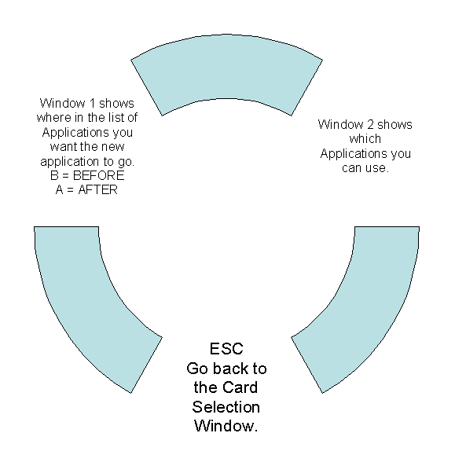
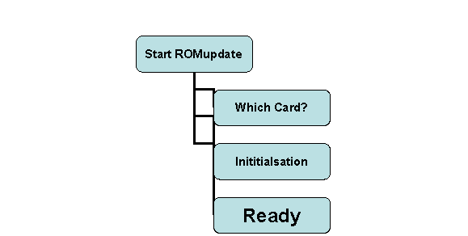

Same as Flashstore with the exception of un-writeable items will be grey.
E.g. RAM cards and Intel Flashcards in slot 2.
Select which Flashcard to use 1, 2 or 3.

The Initialisation routine does the following
Looks at the Flash Card and lists the Applications (that are there) in the left-hand screen in the style of the Application list in the INDEX. If it is a blank card it displays NONE.
Looks and checks the CRC of any files in the Default RAM device that can be used with ROMupdate. These include both types of files .epr and .63 files.
Checks the Flashcard to see if there is any available space for additional applications, even taking an educated guess if reclaiming is used in the file area.
These files are then displayed (without extensions) in the next window (Window 2). If the filename is greyed out it means that you could use it, but not at the moment. Perhaps there is no more room to put the application on this ROM.
The third window (what’s left) is used for user interface.
Use the left and right arrows to select the window.

This window is used to show the initial and final layout of the order of applications. It is drawn in the style of the Application list in the index.
The cursor can be moved up and down that list. There are 3 commands
If the ENTER key is pressed
then a dialogue box says
“Insert Application Before or After
the cursor?”
Pressing B makes a blank space in the application list. If the
‘B’ key is pressed a blank space appears in the
application list. This space will be filled when the application is
selected in Window 2.
If the ‘B’ key is pressed then a blank space appears in the application list before the cursor.
If the ‘A’ key is pressed then a blank space appears in the application list after the cursor.
This space will be filled when the application is selected from window 2.
For the purpose of writing CLI files it is proposed that we use numbers to position where in the list you want the application to go. E.g. <>I23 (that is letter I in the 21st position from the top).
This window is only 12 characters wide.
General
If you do not select the position in Window 1 the following defaults will take place. If a position is selected then the application is added to that position.
To
UPDATE AN EXISTING APPLICATION - move the cursor over the filename in Window 2 and press ENTER
ADD A NEW APPLICATION - move the cursor over the filename in Window 2 and press ENTER – this adds the new application to the end of the list. If there is no room